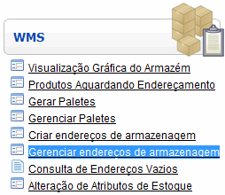
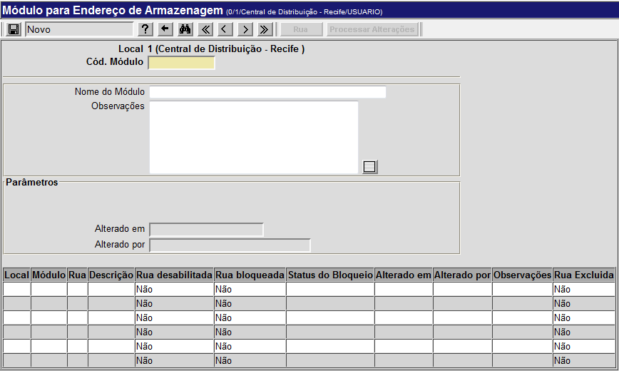
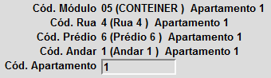
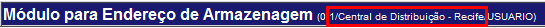
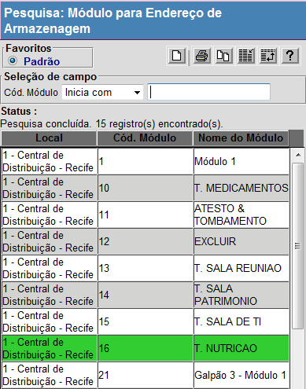
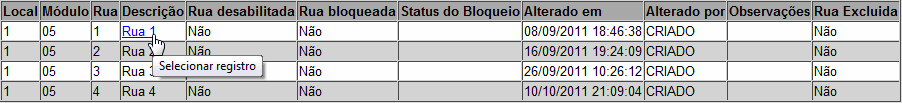

Gerenciar Endereços de Armazenagem [ Voltar ]Utilize este formulário para organizar a estrutura de endereços de armazenagem de um local de estoque. Para acessar o formulário, vá ao menu "WMS" na página inicial e clique em "Gerenciar endereços de armazenagem". 
O sistema vai abrir a seguinte tela: 
Observação: este formulário é exclusivamente para a edição dos endereços de armazenagem existentes. Caso você queira criar um novo endereço, consulte o manual Criar Endereços de Armazenagem. O local de estoque pode ser subdividido nos seguintes níveis:
Um produto “X”, por exemplo, pode estar localizado no módulo 05, rua 4, prédio 6, no 1° andar, no apartamento 1. Neste caso, o seu endereço de armazenagem no sistema seria: 05-4-6-1-1. 
Para acessar um módulo, o usuário precisa estar atualmente o local que contenha tal módulo. O seu local atual é visível na barra de título do sistema. 
Para mais informações sobre como mudar de local, consulte o manual Alterar Local. Primeiro, insira o código do módulo desejado. Se necessário, clique no botão 
Após a seleção do módulo este será carregado e, na parte inferior da tela, serão mostradas todas as ruas contidas nele. Além de mostrar o número de ruas, a tabela indica quais delas estão bloqueadas, a data da última alteração e o responsável. Caso deseje alterar o nome do módulo ou inserir observações, lembre que, além de clicar no botão Para acessar alguma das ruas do módulo, o usuário pode seguir um dos seguintes caminhos:

A página de edição de ruas funciona exatamente igual à dos módulos. Após inserir o código da rua, ela será carregada e na parte inferior da tela serão mostrados os prédios contidos nela. Para acessá-los, repita os mesmos passos utilizados na pesquisa de ruas. Além da edição das ruas, o usuário poderá editar, nos respectivos níveis, os prédios, andares e apartamentos. Observação: após qualquer mudança nos níveis Rua, Prédio, Andar e/ou Apartamento, é indispensável que o botão
|
 [Procurar] para selecionar o módulo a partir de uma listagem de módulos cadastrados.
[Procurar] para selecionar o módulo a partir de uma listagem de módulos cadastrados. (Salvar), é preciso clicar no botão para que as modificações sejam realmente efetivadas.
(Salvar), é preciso clicar no botão para que as modificações sejam realmente efetivadas. seja clicado. E, além disso, é necessário retornar sempre à tela de edição de módulos - clicando no botão
seja clicado. E, além disso, é necessário retornar sempre à tela de edição de módulos - clicando no botão  (Voltar) as vezes que forem necessárias - e clicar no botão para efetivar as modificações.
(Voltar) as vezes que forem necessárias - e clicar no botão para efetivar as modificações.